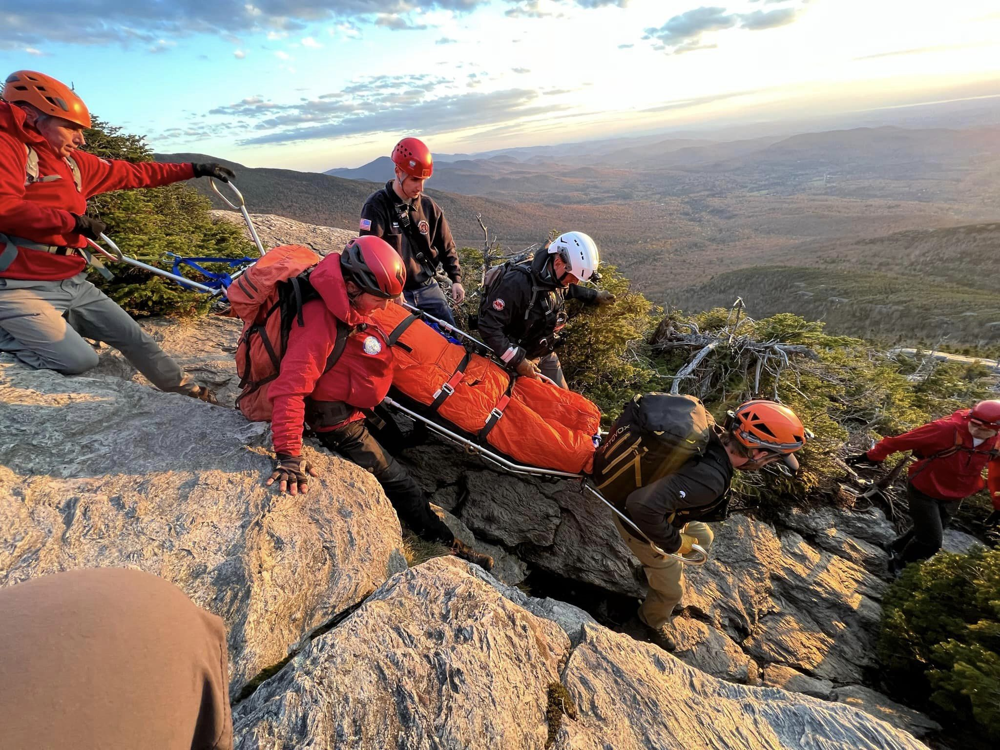
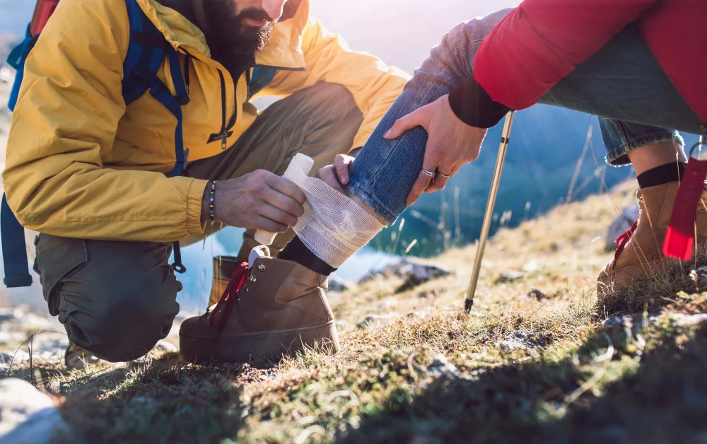

Adventure Safety Tips
Safety is important because it helps prevent accidents, injuries, and dangerous situations before they happen. Whether you are hiking, boating, or fishing, being prepared and aware of your surroundings allows you to make better decisions and respond quickly to risks. By following safety guidelines and using proper equipment, you can have more enjoyable and worry-free experiences outdoors.
Hiking Safety
- Plan your route and check the weather before leaving.
- Tell someone where you're going and when you'll return.
- Carry water, snacks, a map, flashlight, and a first-aid kit.
- Wear proper hiking shoes and dress in layers.
- Stay on marked trails and know your limits.

Boating Safety
- Always wear a life jacket while on the water.
- Check weather and water conditions before boating.
- Bring safety gear: whistle, flashlight, and emergency kit.
- Never operate a boat under the influence of alcohol.
- File a float plan and tell someone your route.
Fishing Safety
- Wear non-slip shoes near water and docks.
- Use sunscreen and stay hydrated.
- Be careful with hooks and sharp tools.
- Check local fishing regulations and licenses.
- Watch for changing weather conditions.
